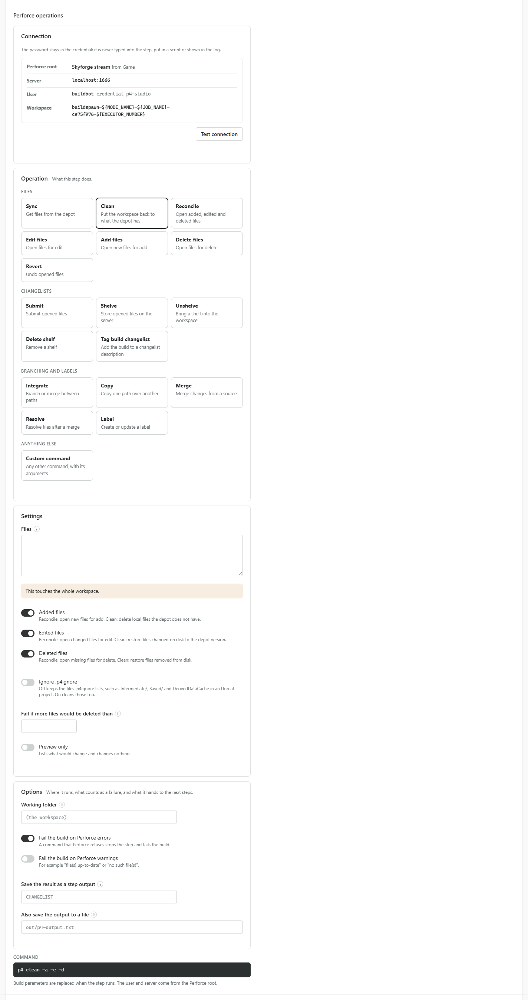

Clean a Perforce workspace
Remove old build output and restore changed files before a build, with a safety limit so a wrong path cannot wipe a big workspace.
Before you start
- A build configuration that uses a Perforce root.
- You know what to keep. In an Unreal Engine project,
Intermediate/,Saved/andDerivedDataCacheare slow to rebuild, so they are usually kept.
Steps
Clean only what you choose
- Open Settings › Build steps and click Add build step. Add Perforce operations.
- Name it
Clean workspaceand click the Clean card. - In Files type the folder, for example
//skyforge-win64-${NODE_NAME}/Game/.... If you leave it empty, the whole workspace is cleaned and the form warns you. - Leave Added files, Edited files and Deleted files on.
- Leave Ignore .p4ignore off, so the files your
.p4ignorelists are kept. - In Fail if more files would be deleted than type
2000. - Drag the step to the top, then click Save.

Try it first
Tick Preview only and run the build. The log counts the files that would be deleted, restored and refreshed, and changes nothing. Then turn it off.
Or clean in the root
On the Perforce root, set How to sync to Auto Clean to clean at every checkout, or switch on Remove the workspace after each build for a fresh workspace every time. For one clean build, use the build configuration action that enforces a clean checkout; the next build then starts with an empty workspace.
Check it worked
$ p4 clean -a -e -d //skyforge-win64-win-build-01/Game/... deleted: 214 files restored: 0 files refreshed: 3 files
The counts tell you what happened. The next compile step finds a clean tree.
Troubleshooting
| You see | What to do |
|---|---|
| Clean would delete N files, more than the limit | Nothing was deleted. Check the Files path. Raise the limit if the number is right. |
| The cache is gone after every build | Switch Ignore .p4ignore off and list the cache folders in .p4ignore. |
| The step cannot run | The build configuration needs a Perforce root. See Perforce operations. |